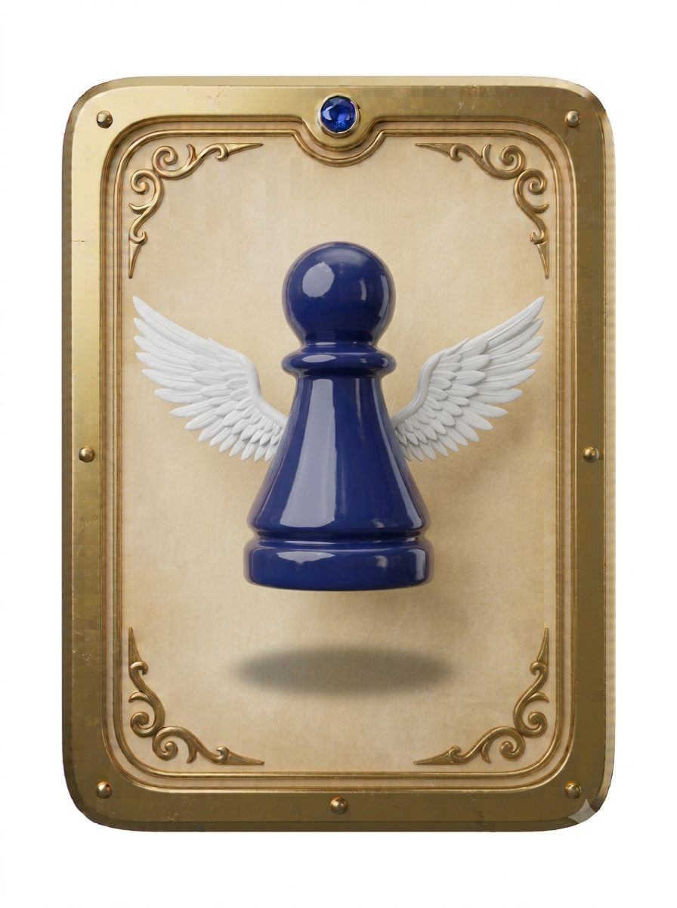

The Secret Life of Bees

A honeybee colony is like a busy little city. It usually has one queen, thousands of worker bees, and a few hundred drones in summer.
Worker bees do almost everything. Young workers clean the hive and feed the larvae. Older workers fly out to collect nectar and pollen from flowers.
When a bee finds a good patch of flowers, it returns to the hive and performs a waggle dance. The direction and length of the dance tell other bees where to fly and how far to go.
Bees are also important for our food. As they move from flower to flower, they carry pollen that helps many fruits and vegetables grow.
Next time you see a bee on a flower, remember that it is working hard for its whole city, and for us too.
This article was written as a SoriTube example.